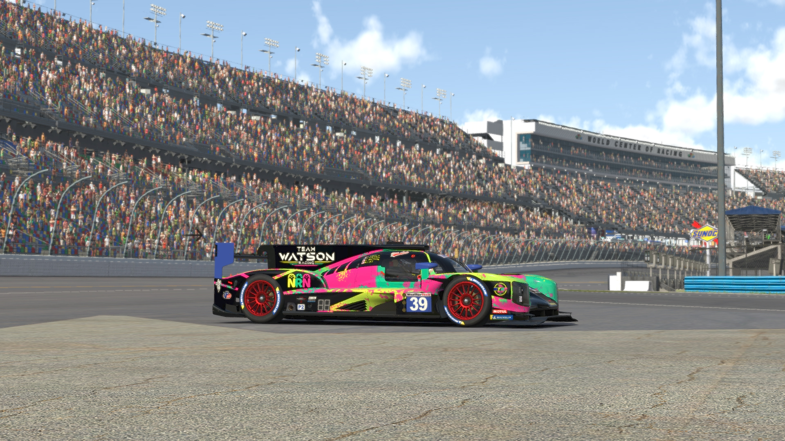
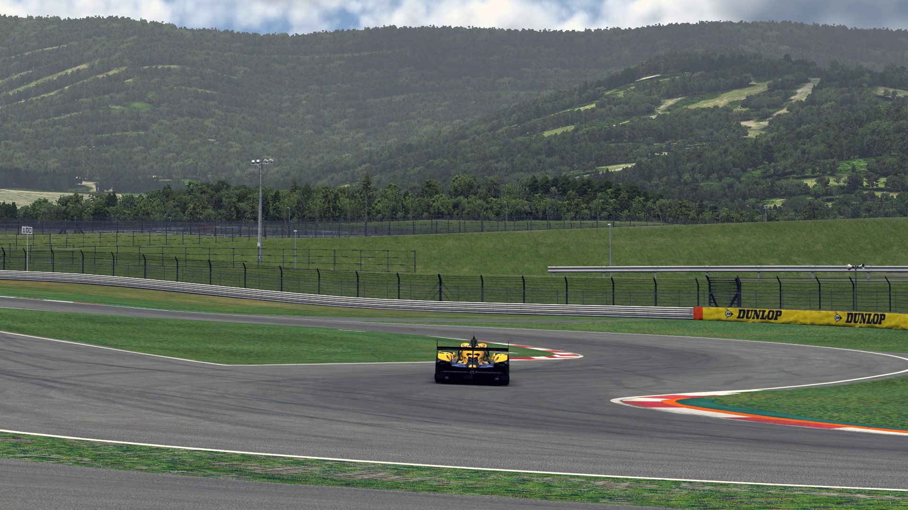
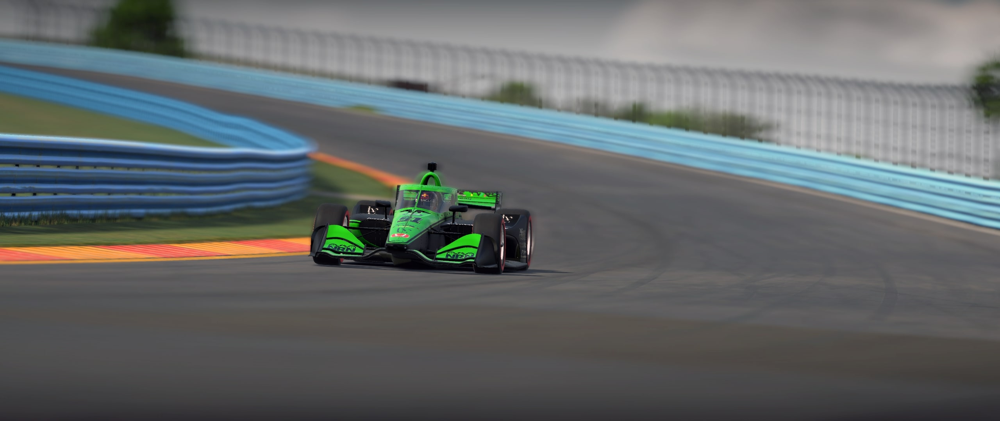
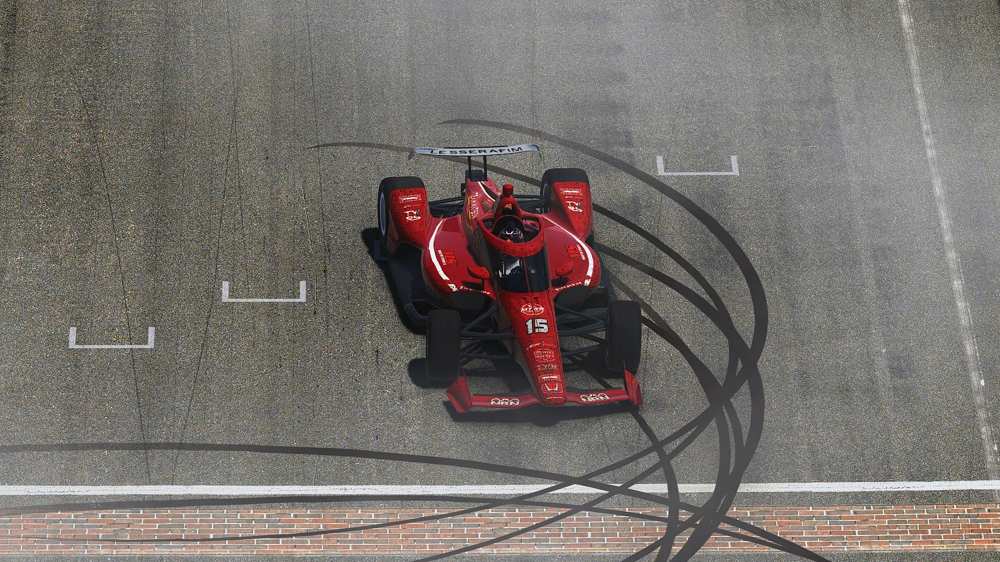
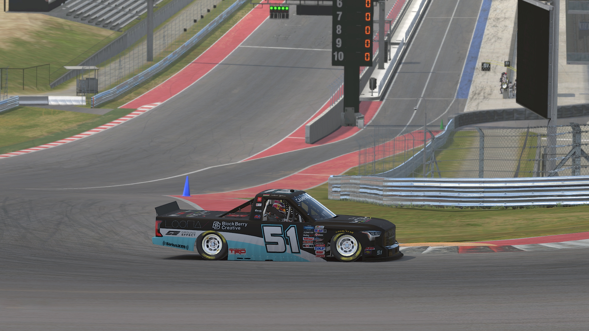
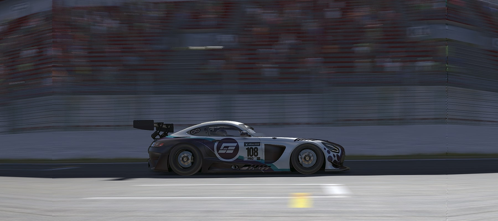
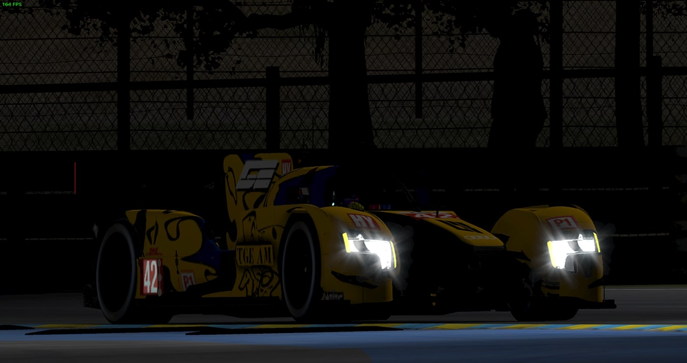
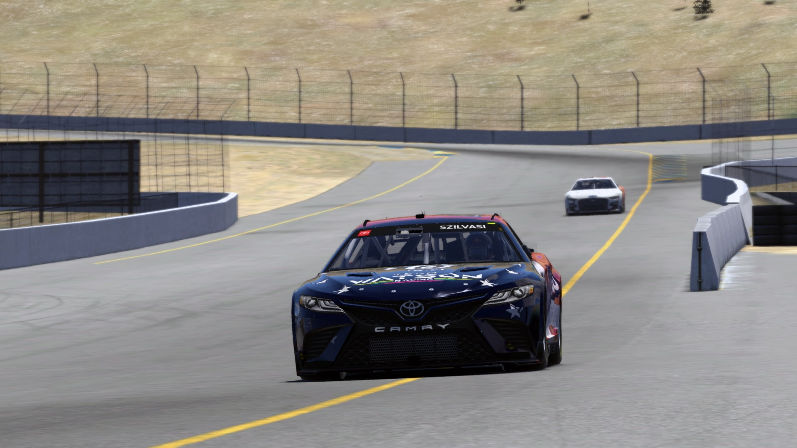

Ahogy említettem, a fő hobbim a simracing. Konkrét lényege az, hogy bármilyen autóversenyzős játék, csak kompetitív szinten. Azóta csinálom, amióta megkaptam az első számítógépem, ami 2011-12 körül volt. 2014-ig kisebb-nagyobb kihagyással csináltam, utána áttértem a League of Legendsre.
Miután kiégtem az alatt a 3 év alatt, újra előszedtem, F1 2017-el. Amúgy a karrierem túlnyomó részét F1-el töltöttem. Nagyon sok magyar bajnokságban megfordultam, mondhatni mindenhol, ráadásul mint pilótaként, mint kommentátorként.
Az első nagy váltás 2020-ban volt, ahol áttértem az endurance, vagyis a hosszútávú versenyzésre. A sajnos nemrégiben megszűnt MUGEN SimRacing egyik alapítója voltam, és rengeteg versenyt nyertünk a srácokkal, én többek között Sebringi 12 órást és Petit LeManst nyertem velük.
Tavalyi év folyamán jött egy nagy váltás, hiszen platformot váltottam, rFactor 2-ről iRacingre. Ott is a fő profilom az endurance versenyzés, de nagyon sok különböző kategóriával is versenyeztem már a bő másfél év alatt.
Jelenleg a Team Ground Effect AM csapatában versenyzem, ahol főleg LMP1-el versenyzek egy pár barátommal, ezen kívül majdnem az összes hosszútávú futamon részt vettünk. Itt egy lista az eredményeimről.
| Verseny | Autó | Csapat | Helyezés |
| Indy 500 2022 | Dallara IR18 | Team Watson Racing | 1st place |
| Daytona 500 2022 | NASCAR Cup Toyota Camry | Team Watson Racing | 2nd place |
| European Endurance Series - 6H of Spa (21S4) | Audi R18 LMP1 | Team Ground Effect AM | 3rd place |
| European Endurance Series - 6H of Le Mans (22S2) | Audi R18 LMP1 | Team Ground Effect AM | 3rd place |
| European Endurance Series - 6H of Le Mans (21S4) | Audi R18 LMP1 | Team Ground Effect AM | 4th place |
| IMSA Endurance Series - Watkins Glen (22S2) | Dallara P217 LMP2 | Team Ground Effect AM | 4th place |
| IMSA Endurance Series - Mid-Ohio (22S2) | Dallara P217 LMP2 | Team Ground Effect AM | 4th place |
| European Endurance Series - 6H of Silverstone (22S4) | Porsche 919 Hybrid | Team Ground Effect AM | 4th place |
| European Endurance Series - 6H of Spa (22S4) | Audi R18 LMP1 | Team Ground Effect AM | 5th place |
Zárásként egy pár válogatott kép az autóimról, amikkel versenyzek.







